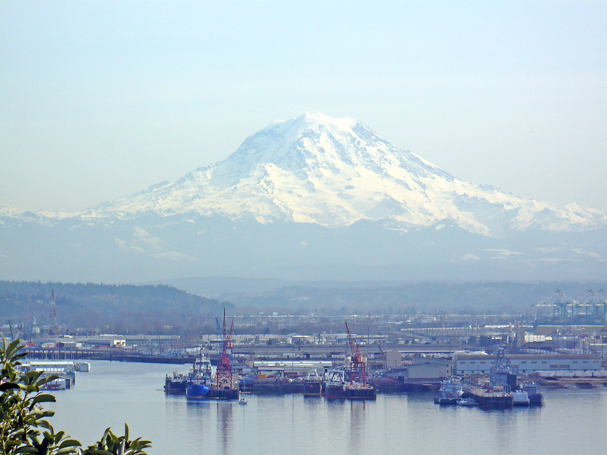

About Tacoma
| Population | The population of Tacoma as of 2023 is 219,346.[5] |
|---|---|
| Year Incorporated | Tacoma was incorporated on November 12, 1875.[6] |
| Region | Tacoma is located in the South Puget Sound region of Washington State.Wikipedia: Tacoma, Washington |
| Classification | Tacoma is classified as urban and is the third-largest city in Washington State.[7] |
| Average Income Level | The average household income in Tacoma is $62,358 per year.[8] |

[9]